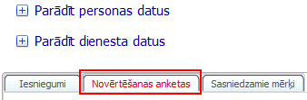
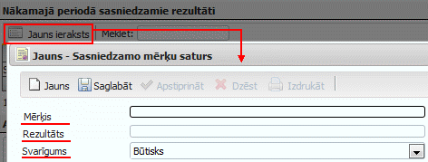

Novērtēšanas anketas¶
Šajā darba režīmā Vadītājam ir pieejama informācija par visām pakļautībā esošo darbinieku aizpildītajām (apstiprinātajām) un vēl neaizpildītajām anketām, tāpat arī šajā darba režīmā ir pieejama Novērtēšanas anketa, kas Vadītājam jāaizpilda pašam par sevi:
- scale
100%
Anketas iespējams atpazīt pēc kolonnām: Darbinieks un Vērtētāja tips (Ja Vērtētāja tips ir: Pats- anketa vēl nav iesniegta no Darbinieka puses, ja minēts darbinieka vārds kolonnā: Darbinieks,ja darbinieks ir pats Vadītājs - tad šī anketa ir jāaizpilda par sevi. Ja Vērtētāja tips ir Tiešais vadītājs->tad anketa no darbinieka puses ir iesniegta un vērtējums jāsniedz Vadītājam).
Anketas statuss nosaka, vai Novērtēšanas anketa jau ir aizpildīta un apstiprināta vai tā vēl ir tikai iesniegšanas režīmā.
1. Novērtēšanas anketas atvēršana¶
Lai uzsāktu anketas aizpildīšanu par sevi (Vadītāju), nepieciešamsizvēlēties atbilstošo ierakstu un nospiest uz jebkuras no kolonnas ierakstiem (Piemēram, Ievadīt):
- scale
100%
2. Novērtēšanas anketas aizpildīšana (Vadītājs)¶
Izvēloties aizpildīt datus par sevi (Vadītāju), tiks atvērts Personas kartītes logs. Novērtēšanas anektu būs iespējams aizpildīt no darba režīma->Novērtēšanas anketas:
- scale
100%
Instrukcija novērtēšanas anketas aizpildīšanai: Novērtēšanas anketas
3. Novērtēšanas anketas aizpildīšana par pakļautībā esošajiem darbiniekiem ++++++++++++
Personāla novērtēšanas anketu sarakstā Vadītājam pieejama informācija par pakļautībā esošo dabinieku aizpildītajām anketām.

- scale
100%
Kamēr pakļautībā esošais darbinieks anketu nav aizpildījis un apstiprinājis -> sarakstā esošai anketai, kuraiVērtētāja tips ir “Pats”->statuss ir “Ievadīt”
- scale
100%
Tad, kad pakļautībā esošais darbinieks aizpilda un apstiprina savu anketu-> sarakstā par katru šo pakļautībā esošo darbinieku pieejamas 2 anketas - Apstiprinātā anketa, ko ievadījis un iesniedzis Darbinieks (Vērtētāja tips “Pats”->Statuss “Iesniegt”) un Anketa, kuru jāievada Vadītājam (Vērtētāja tips “Tiešais vadītājs”->Statuss “Apstiprināts”).
Lai uzskātu anketas aizpildīšanu, nepieciešamsnospiest uz jebkuras no izvēlētās rindas kolonnas ierakstiem (Piemēram, Iesniegt).
Pēc šo darbību veikšanas, tiksatvērta identiska kopija Darbinieka aizpildītajai Novērtēšanas anketai, kuru Vadītājam nepieciešams papildināt ar saviem papildinājumiem un sniegt atbilstošu novērtējumu nepieciešamajos ievades lauciņos:
1) Nākamajā periodā sasniedzamie rezultāti -> Lai pievienotu jaunu ierakstu, nepieciešams nospiest pogu “Jauns ieraksts” -> Un tiks atvērts jauns Sasniedzamo mērķu satura logs, kurā nepieciešams ievadīt Mērķi, sagaidāmo Rezultātu un norādīt Svarīguma pakāpi, ar bultiņas palīdzību izvēloties to no saraksta:
- scale
100%
Lai saglabātu pievienoto ierakstu nepieciešams nospiest pogu .. image:: images_ozols/26381.png :scale: 100% . Lai atkārtoti pievienotu jaunu - nākamo ierakstu, nepieciešams nospiest pogu: .. image:: images_ozols/26382.png :scale: 100% .
2) Amata pienākumu izpilde atbilstoši amata aprakstā noteiktajām prasībām -> Obligāti aizpildāms lauks, kurbrīvā formā nepieciešams ievadīt novērtējuma saturu, labajā pusē izvēloties atbilstošo vērtējumu no saraksta:

- scale
100%
3) Rezultātu sasniegšanu un amata pienākumu izpildi veicinošie un kavējošie faktori -> Obligāti aizpildāmi lauki, kur brīvā formā nepieciešams ievadi veicinošos un kavējošos faktorus.
4) Kompetences -> Obligāti aizpildāmie lauki atzīmēti ar .. image:: images_ozols/26384.png :scale: 100% - brīvā formā nepieciešams ievadīt satura informāciju par katru no kompetencēm. Iepazīties ar katras kompetences pilnu aprakstuiespējams, ar peli uzejot uz atbilstošās kompetences nosaukumu:

- scale
100%
Katras kompetences apraksta lauka labajā pusē nepieciešams norādīt vērtējumu, izvēloties to no saraksta (nopiežot uz bultiņas tiek atvērts pilns vērtējumu saraksts).
5) Apmācības -> Lai pievienotu jaunu ierakstu, nepieciešams nospiest pogu “Jauns ieraksts” -> Un tiks atvērts jaunsMācību un attīstības vajadzībusatura logs, kurā nepieciešams ievadīt mācību termiņu, no saraksta izvēlēties Apmācību veidu, brīvā formā atbilstošajos laukos ierakstīt: Apmācību vajadzību, Attīstības darbību, kā arī Pamatojumu.

- scale
100%
Lai saglabātu pievienoto ierakstu nepieciešams nospiest pogu .. image:: images_ozols/26381.png :scale: 100% . Lai atkārtoti pievienotu jaunu - nākamo iierakstu, nepieciešams nospiest pogu: .. image:: images_ozols/26382.png :scale: 100% .
6) Nepieciešamās izmaiņas amata aprakstā ->Obligāti aizpildāms lauks, kur brīvā formā nepieciešams ievadi informāciju par nepieciešamajām izmaiņām esošajā amata aprakstā.
7) Iespējamā karjeras attīstība -> Obligāti aizpildāms lauks, kur brīvā formā nepieciešams ievadi informāciju par iespējamo karjeras attīstību.
8) Nozīmīgākais, kas nepieciešams, lai Sabiedrībā paaugstinātos darba efektivitāte -> Obligāti aizpildāms lauks, kur brīvā formā nepieciešams ievadi informāciju.
4. Novērtēšanas anketas saglabāšana, apstiprināšana un izdruka¶
Pēc Novērtēšanas anketas aizpildīšanas par pakļautībā esošo Darbinieku, anketu iespējams saglabāt un izdrukāt, nospiežot pogu: .. image:: images_ozols/26393.png :scale: 100% .
- scale
100%
Novērtēšanas anketa par darbinieku uz šo brīdi vēl nav līdz galam apstiprināta, bet tiek izdrukāta, lai ar darbinieku varētu apspriest novērtējuma rezultātu.
Pēc Vadītāja un pakļautībā esošā darbinieka apspriedes, Vadītājam nepieciešams papildināt esošo Novērtēšanas anketu ar Darbinieka izteiktajiem komentāriem, aizpildot informācijas Novērtēšanas anketas apakšējās daļas Komentāru laukā:
- scale
100%
- scale
100%
Pirms anketas apstiprināšanas un drukāšanas -> Nepieciešams pārliecināties vai visa informācija ir aizpildīta. Tiklīdz anketa tiek apstiprināta, to vairsNAV iespējams labot.
Ja visa informācija ir pārbaudīta un atbilstošie lauki aizpildīt, lai pilnībā pabeigtu anketas aizpildīšanu, to apstiprinātu un izdrukātu galīgo Novērtēšanas anketas rezultātu, nepieciešams izmantot anketas augšējā daļā pieejamo pogu:
- scale
100%
Pēc pogas nospiešanas, tiks uzdots kontroljautājums “Apstiprināt anketu?” -> atbildot apstiprinoši, tiks apstiprināta aizpildītā anketa - tā vairs nebūs pieejama labošanai un būs iespējams izdrukāt Novērtēšanas anketas protokolu, izmantojot anketas augšējā daļā pieejamo pogu: .. image:: images_ozols/26389.png :scale: 100% un izvēloties izdrukas formu:
- scale
100%